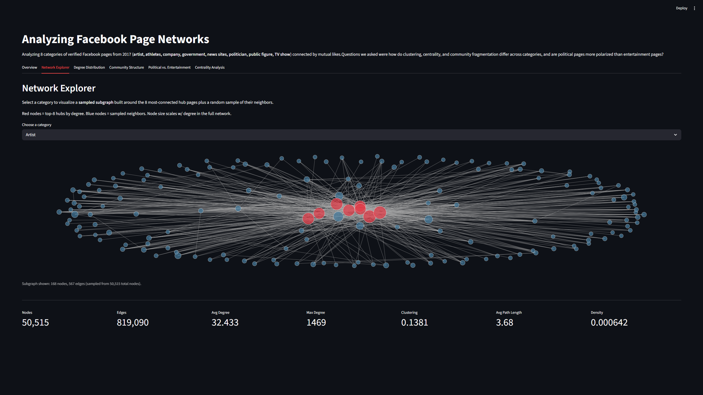
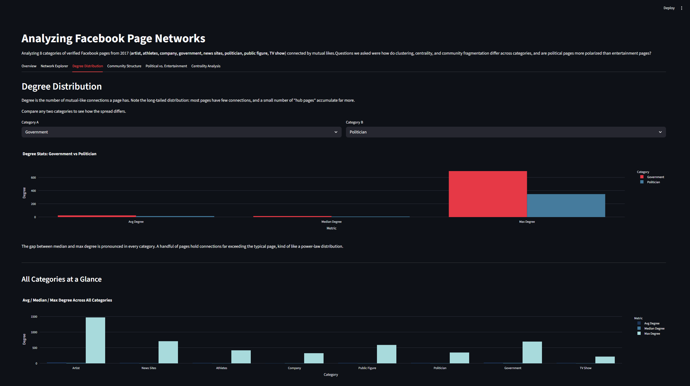
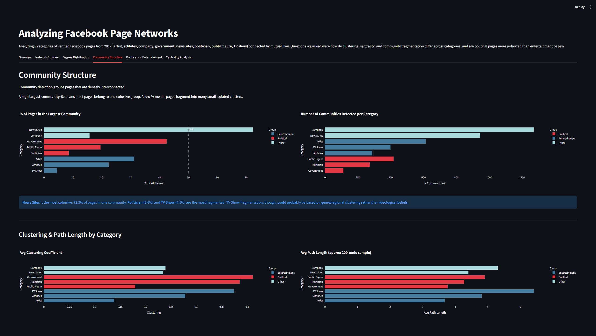
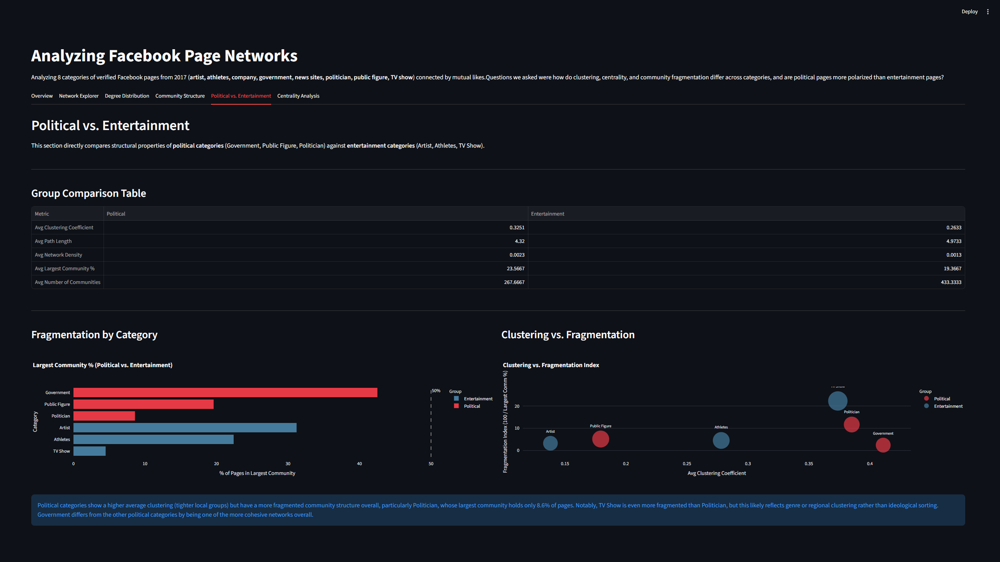
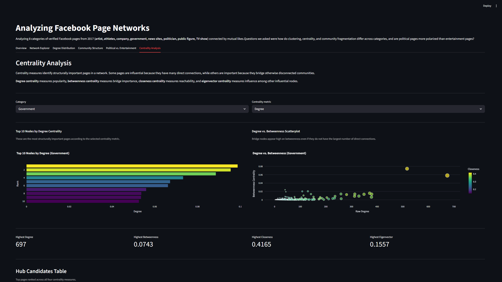

Python Developer • Data Analysis
Facebook Social Network Analysis is an interactive dashboard for exploring large-scale Facebook page networks through graph analytics and visualization. Using datasets from the Stanford Network Analysis Project (SNAP), the project examines relationship structures across eight categories of Facebook pages and provides interactive tools for comparing network characteristics, centrality metrics, and connectivity patterns.
The goal of the project was to investigate how graph analytics can reveal structural differences between online communities. Rather than focusing solely on statistical output, we wanted to create an interactive dashboard that allowed users to explore network properties visually while supporting research questions through interpretable metrics and visualizations.
Data Analysis
3 Developers
2 Months
Python • Streamlit • NetworkX • Pandas • Plotly
Processing datasets containing tens of thousands to hundreds of thousands of relationships required efficient graph processing while keeping dashboard interactions responsive.
A major challenge was translating graph theory concepts such as centrality into visualizations that were understandable to users without a networking background.
The project required coordinating research, implementation, and visualization work across multiple contributors while maintaining consistent analysis throughout the dashboard.





The application was built using Streamlit as the interactive frontend with Python handling data processing and graph analysis through NetworkX. Large Facebook network datasets were loaded into memory, analyzed using graph algorithms, and presented through interactive visualizations and statistical summaries to support exploratory analysis.
This project introduced me to graph analytics and the challenges of interpreting large-scale network data. Beyond implementing analysis tools, I learned how important it is to communicate technical findings clearly through visualization and written interpretation. It also reinforced how software can bridge research and user interaction by making complex datasets easier to explore and understand.
Emily Tran
Data Analysis • Python Development • Research & Documentation
Elijah Chan
Project Setup • Python Development • Dashboard Infrastructure
Keon Der
Python Development • Graph Analytics • Dashboard Implementation